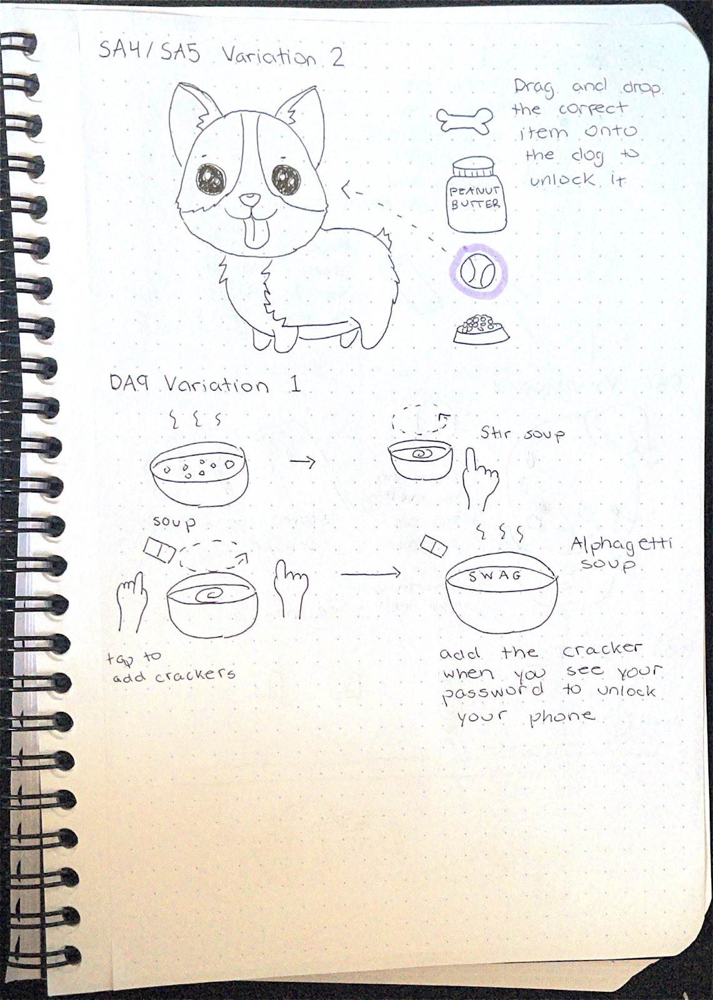

Choose a subset of images to be your password. For added security, the order in which images are chosen matters. If the password is not completed after a certain time limit, the screen resets and a new set of items is presented to the user. Another alternative,
it to correctly select the ingredients of a secret dish item.
Refined Sketch 2 & 3 by Sophia
Refined Sketch 2 A tree of images that grows an extra two nodes every time the correct image is selected.
Refined Sketch 3 Big Yoshi is low health and needs to be healed. Drag and drop a Maximum Tomato onto Yoshi to unlock the phone.

Refined Sketch 4 & 5 by Sophia
Refined Sketch 4 Your puppy is in a bad mood and requires a certain item to be happy again. Drag and drop the correct item onto the puppy to unlock the phone.
Refined Sketch 5 Start off by using your pointer finger to stir the soup. Then, use your other hand to tap the screen and add some crackers to the soup with each tap. To add a security aspect, you can stir a bowl of Alphagetti
soup until the password completely forms in the soup.
Refined Sketch 6, 7, & 8 by Sophia
Refined Sketch 6 Place your hand over the phone to warm up the penguin. The hand must cover the proximity sensor and a slight amount of pressure must be applied to the screen for the warming to take affect. Once the penguin
is warm enough, the phone will unlock.
Refined Sketch 7 The snowman is slowly melting away. Cover the built-in proximity sensor with your hand for three seconds to protect him from the blazing sun. The snowman will then stop melting and the phone will unlock.
Refined Sketch 8 Your avatar is walking at a constant speed along a straight path. Tap the proximity sensor with your finger to jump and hit the number blocks floating above your head. Hit the correct number blocks to unlock
your phone.
Refined Sketch 9 & 10
Refined Sketch 9 A variation of the whack-a-mole game where the proximity sensor must be tapped on for Yoshi to whack a mole.
Refined Sketch 10